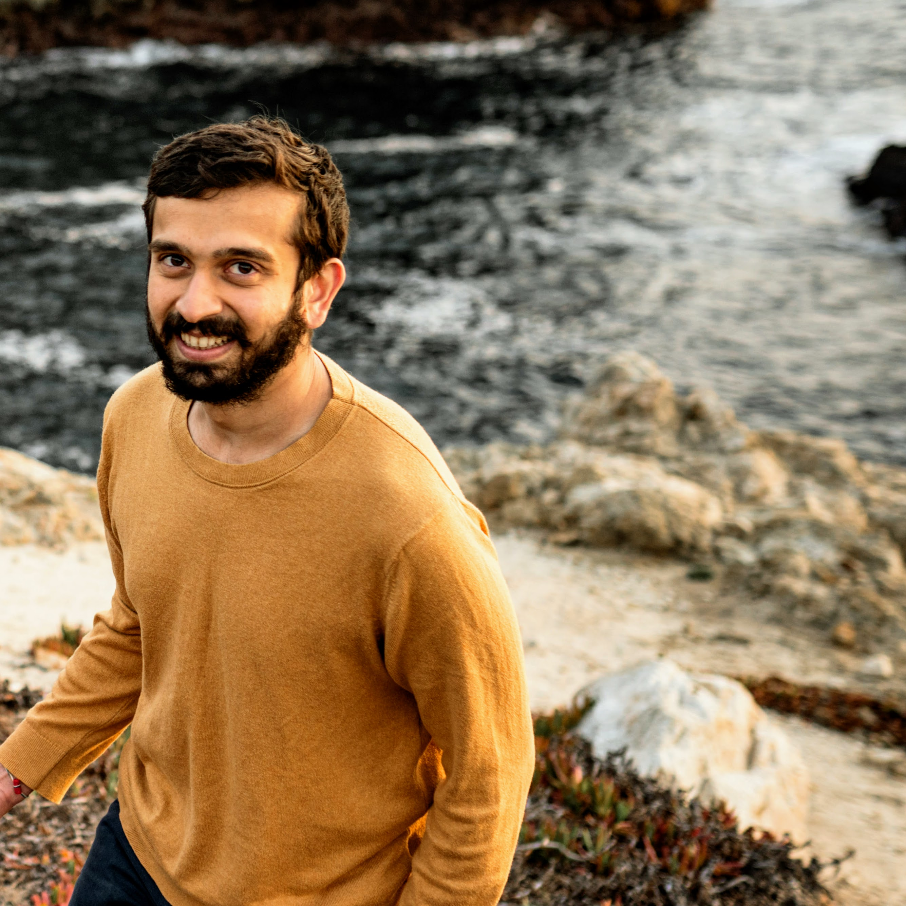

I am a software engineer at Stripe working on Terminal Traffic. Prior to this, I was a Staff Software Engineer at HBO working on HBO Now and HBO Max Commerce and Billing Services.
My passions lie in writing, cooking and digital photography, where I blend creativity, art and technology. In our spare time, my fiancé and I enjoy hikes and are very passionate about animal rescue and have had the pleasure of fostering several dogs. Feel free to reach out to me at mk@mahirk.com